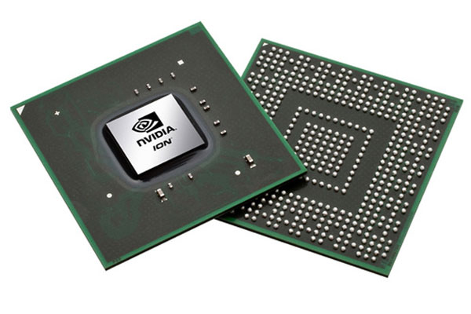
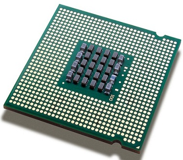

Processor

A processor, or "microprocessor," is a small chip that resides in computers and other electronic devices. Its basic job is to receive input and provide the appropriate output. While this may seem like a simple task, modern processors can handle trillions of calculations per second.
The central processor of a computer is also known as the CPU, or "central processing unit." This processor handles all the basic system instructions, such as processing mouse and keyboard input and running applications. Most desktop computers contain a CPU developed by either Intel or AMD, both of which use the x86 processor architecture. Mobile devices, such as laptops and tablets may use Intel and AMD CPUs, but can also use specific mobile processors developed by companies like ARM or Apple.
Modern CPUs often include multiple processing cores, which work together to process instructions. While these "cores" are contained in one physical unit, they are actually individual processors. In fact, if you view your computer's performance with a system monitoring utility like Windows Task Manager (Windows) or Activity Monitor (Mac OS X), you will see separate graphs for each processor. Processors that include two cores are called dual-core processors, while those with four cores are called quad-core processors. Some high-end workstations contain multiple CPUs with multiple cores, allowing a single machine to have eight, twelve, or even more processing cores.